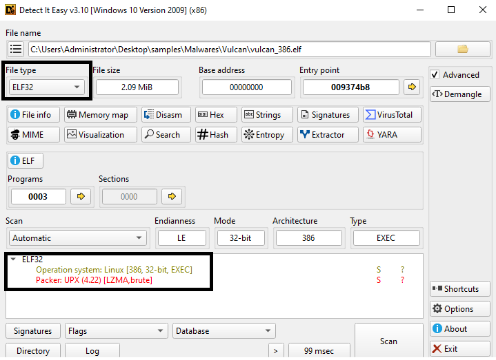
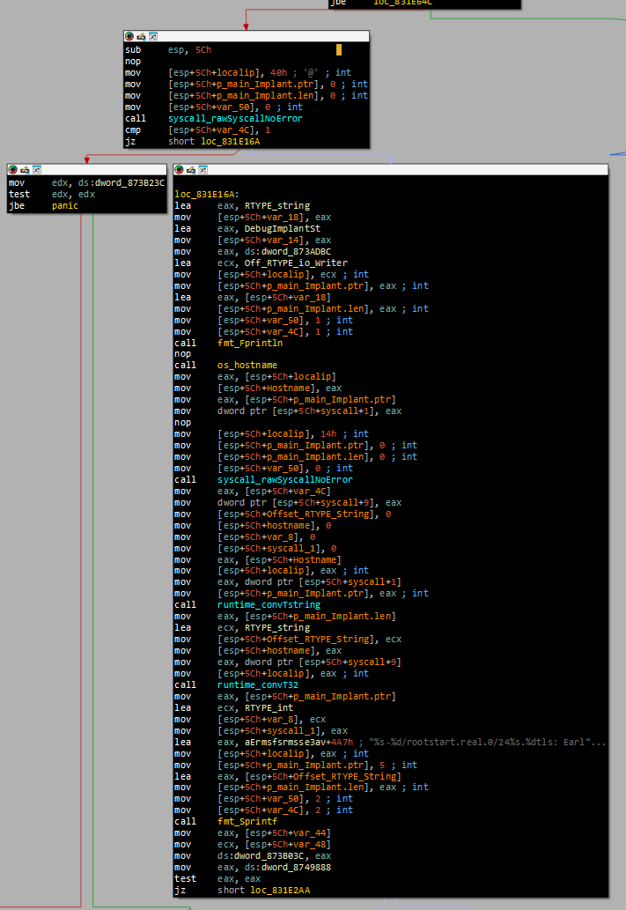
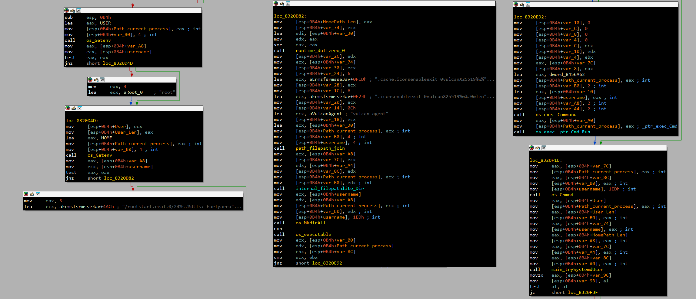
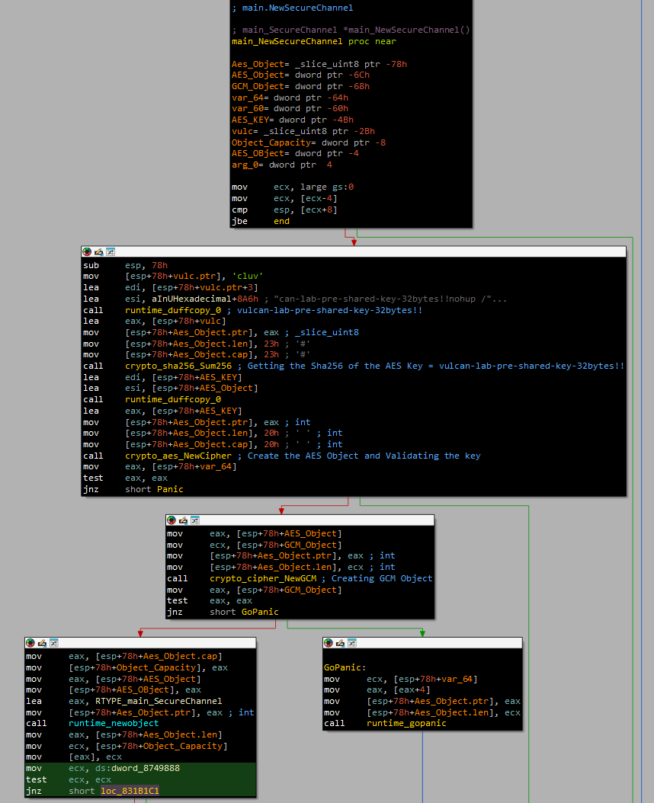
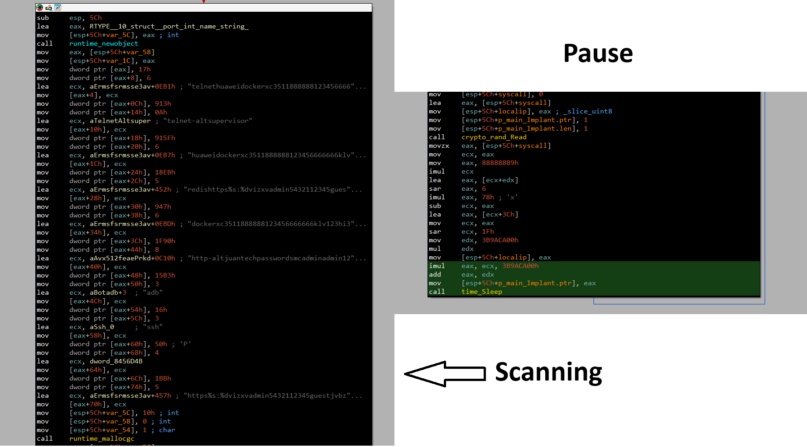

Vulcan Malware: Analysis of a Multi-Persistent Go-Based Linux Implant
1. Overview & Static Analysis
Initial triage was performed using DIE (Detect It Easy) to identify any packing or protection techniques applied to the sample. DIE identified the binary as packed with UPX version 4.22. The sample was unpacked first, after which IDA Pro was used to examine its actual functionality.
The malware is structured around four core functions:
- Function 1 — Main_main: System fingerprinting and implant initialisation
- Function 2 — Persistence: Multi-vector persistence across systemd, cron, rc.local, shell profiles, and binary hijacking
- Function 3 — Secure Channel: AES-GCM encrypted communication layer
- Function 4 — C2 Connection: Goroutine-based command-and-control with reconnect logic

Figure 1: DIE analysis — sample identified as packed with UPX 4.22
2. Function (1): Main_main — Host Fingerprinting
Using IDA Pro, the malware's entry point begins with a syscall check. If the check fails the implant terminates immediately; if it passes, execution continues to the host information collection phase.
The implant gathers the following host details:
- Hostname →
os_hostname() - Local IP →
main_getLocalIP() - Architecture →
"x86"/ 3-byte value - System/syscall result → syscall
0x14 - Generated implant ID → constructed from hostname + syscall result
All collected values are stored in main.Implant. After storing them, the malware enables the
scanning and SSH modules before proceeding.

Figure 2: Main_main — syscall check, host fingerprinting, and main.Implant initialisation
3. Function (2): Persistence — Seven-Vector Persistence
The persistence function is the most extensive component of this malware. It begins by resolving the current
username; if none is found it falls back to root. It then resolves the home directory path, using
a hardcoded fallback path if resolution fails.
A copy of itself is written as vulcan-agent and its permissions are set to 755
(executable by owner, group, and others). The following persistence mechanisms are then attempted in sequence:
- User-level systemd service — if successful, a confirmation message is printed
- System-level systemd service — second attempt for system-wide persistence
- Cron job — added to the crontab
/etc/rc.local— appended to the RC startup script- SysV init.d — script dropped into
/etc/init.d/ - Shell startup files —
~/.bashrcand~/.profileboth modified - Binary hijacking — three legitimate binaries are targeted:
/usr/sbin/ntpdbad,/usr/bin/sshd, and/sbin/agetty. Each is replaced with a shell wrapper that executesvulcan-agentbefore calling the original binary.
Additionally, a ticker fires every 1 hour and checks whether
vulcan-agent still exists at the user home path. If the file is missing,
establishPersistence() is called to restore all mechanisms. The function is also called on every
hourly tick regardless, effectively re-establishing persistence even if it was never disrupted.

Figure 3: Persistence function — seven simultaneous persistence vectors including binary hijacking
4. Function (3): Secure Channel — AES-GCM Encryption
The secure channel function constructs the encryption layer used to protect all C2 communications. The process is as follows:
- The hardcoded pre-shared key string
can-lab-pre-shared-key-32bytes!!is passed through SHA-256 to derive a 32-byte AES key - The derived key is validated before use
- An AES cipher object is created from the key
- An AES-GCM object is constructed from the AES cipher
- The GCM object is stored in the secure channel structure for use by the C2 connection function

Figure 4: Secure Channel — SHA-256 key derivation and AES-GCM object construction
5. Function (4): C2 Connection
The C2 connection function is responsible for establishing communication between the implant and its operator. It performs the following steps:
- Calls the Secure Channel function to obtain an AES-GCM object
- Creates a task channel with a capacity of 10
- Allocates a
main.C2Connectionstructure, storing: the C2 address, the AES-GCM object, the task channel, the Implant pointer, and areconnect = trueflag - Logs the C2 address and launches
main_NewC2Connection_gowrapin a new goroutine viaruntime_newproc

Figure 5: C2 Connection — structure allocation, AES-GCM integration, and goroutine launch
After successfully connecting to the C2 server, the malware begins network scanning for exposed hosts, ports, and services. Prior to commencing the scan, a pseudo-random delay of 60–179 seconds is introduced. This delay reduces predictable network activity patterns and makes the malware's traffic less obvious to defenders.

Figure 6: Network scanning with pseudo-random 60–179 s delay before execution
6. Indicators of Compromise (IOCs)
| TYPE | INDICATOR | DESCRIPTION |
|---|---|---|
| IPv4 | 146.19.213.198 | Hardcoded C2 server address |
| PORT | 8443 | C2 communication port |
| C2 | 146.19.213.198:8443 | Hardcoded C2 endpoint passed to main.NewC2Connection() |
| DOMAIN | vulcan-c2.local | Domain/string observed in embedded data |
| FILE | vulcan-agent | Malware executable name used across persistence mechanisms |
| PATH | ~/.cache/.icons/vulcan-agent | Installation/persistence path under user home directory |
| PATH | ~/.bashrc | Shell startup file targeted for persistence |
| PATH | ~/.profile | Shell startup file targeted for persistence |
| PATH | /etc/init.d/ | SysV init persistence location targeted by main.tryInitD |
| PATH | /etc/rc.local | RC startup mechanism targeted by main.tryRcLocal |
| PATH | /usr/sbin/ntpdbad | Binary targeted by hijacking routine |
| PATH | /usr/bin/sshd | SSH binary targeted by hijacking routine |
| PATH | /sbin/agetty | Binary targeted by hijacking routine |
| PORT | 22 / 23 / 2323 | SSH and Telnet scanning targets |
| PORT | 2375 / 5555 / 6379 | Docker API, ADB, and Redis scanning targets |
| PORT | 80 / 443 / 8080 / 37215 | HTTP/HTTPS and Huawei service scanning targets |
| KEY | can-lab-pre-shared-key-32bytes!! | Hardcoded pre-shared key — SHA-256 input for AES-GCM |
7. MITRE ATT&CK Mapping
| TACTIC | TECHNIQUE | ID | DESCRIPTION |
|---|---|---|---|
| Discovery | System Owner/User Discovery | T1033 | Retrieves username from the USER environment variable. |
| Discovery | System Information Discovery | T1082 | Collects hostname and system architecture information. |
| Discovery | System Network Configuration Discovery | T1016 | Retrieves the host's local IP address. |
| Discovery | Network Service Scanning | T1046 | Scans network services across multiple ports using highly concurrent workers. |
| C2 | Encrypted Channel: Symmetric Cryptography | T1573.001 | AES-GCM encryption with a SHA-256-derived 32-byte key secures all C2 traffic. |
| C2 | Application Layer Protocol | T1071 | TCP-based network communication for C2 and scanning operations. |
| Persistence | Scheduled Task/Job: Cron | T1053.003 | Persistence established via cron job. |
| Persistence | Create or Modify System Process: Systemd Service | T1543.002 | User-level and system-level systemd persistence attempted. |
| Persistence | Boot or Logon Initialization Scripts: RC Scripts | T1037.004 | Persistence through rc.local. |
| Persistence | Unix Shell Configuration Modification | T1546.004 | Modifies .bashrc and .profile to launch vulcan-agent at login. |
| Persistence | Boot or Logon Initialization Scripts | T1037 | SysV init.d script persistence. |
| Defense Evasion | Hijack Execution Flow | T1574 | Legitimate binaries replaced with wrappers that execute malware before the original binary. |
| Execution | Command and Scripting Interpreter: Unix Shell | T1059.004 | Shell wrapper used to execute the malware and chain to the legitimate binary. |
| Lateral Movement | Remote Services: SSH | T1021.004 | SSH-related functionality and SSH service scanning. |
| Impact | Network Denial of Service | T1498 | Contains functionality associated with network-based DDoS activity. |
8. YARA Rules
Multi-architecture YARA rules targeting the Vulcan malware family. The Family_Vulcan rule matches
on embedded debug strings common across all builds; the architecture-specific rules target the hardcoded C2
address push pattern for each supported platform.
import "pe"
rule Family_Vulcan
{
meta:
description = "Detects Family Vulcan Malware"
author = "SalahEldin Kamil (Mr_MaTriX)"
strings:
$m1 = "DEBUG_HTTP2_GOROUTINES" ascii wide
$m2 = "[DEBUG] Dial error: %v\n" ascii wide
$m3 = "[DEBUG] Read error: %v\n" ascii wide
$m4 = "[DEBUG] readLoop started" ascii wide
$m5 = "[DEBUG] Write error: %v\n" ascii wide
$m6 = "[DEBUG] Scanning enabled" ascii wide
$m7 = "[DEBUG] Invalid URL: %v\n" ascii wide
$m8 = "GODEBUG sys/cpu: value \"" ascii wide
$m9 = "[DEBUG] Worker %d EXITED\n" ascii wide
$m10 = "[DEBUG] Scanning disabled" ascii wide
$m11 = "GODEBUG: can not enable \"" ascii wide
$m12 = "[DEBUG] Implant starting...insufficient security level" ascii wide
$m13 = "[DEBUG] WebSocket connected!" ascii wide
$m14 = "[DEBUG] Worker %d PANIC: %v\n" ascii wide
$m15 = "[DEBUG] Unknown command: %s\n" ascii wide
$m16 = "[DEBUG] SSH spreader started" ascii wide
$m17 = "[DEBUG] Worker 0 scanning %s\n" ascii wide
$m18 = "[DEBUG] Received task: %s %s\n" ascii wide
$m19 = "[DEBUG] SCP to %s failed: %v\n" ascii wide
$m20 = "[DEBUG] Unknown DDoS type: %s\n" ascii wide
$m21 = "GODEBUG: unknown cpu feature \"" ascii wide
$m22 = "[DEBUG] sendMessageSync failed!" ascii wide
$m23 = "[DEBUG] Scan worker %d started\n" ascii wide
$m24 = "[DEBUG] Usage: <type> <args...>" ascii wide
$m25 = "[DEBUG] Self-destruct initiatedbad certificate status responseencrypted client hello required" ascii wide
$m26 = "[DEBUG] SSH spread success to %s\n" ascii wide
$m27 = "[DEBUG] SYN flood init error: %v\n" ascii wide
$m28 = "[DEBUG] connect() goroutine started" ascii wide
$m29 = "[DEBUG] sendMessageSync: conn is nil" ascii wide
$m30 = "[DEBUG] %s exploit SUCCESS on %s:%d\n" ascii wide
$m31 = "GODEBUG: no value specified for \"" ascii wide
$m32 = "GODEBUG sys/cpu: can not enable \"" ascii wide
$m33 = "GODEBUG sys/cpu: can not disable \"" ascii wide
condition:
uint32(0) == 0x464c457f and
(any of them)
}
rule version_386_elf
{
meta:
description = "Detects Vulcan Malware — x86 ELF build"
author = "SalahEldin Kamil (Mr_MaTriX)"
strings:
$Config = {
8D 05 ?? ?? ?? ?? // lea eax, a14619213198844
89 04 24 // mov [esp+...], eax
C7 44 24 04 13 00 00 00 // mov [...], 13h
8B 44 24 34 // mov eax, [esp+...]
89 44 24 08 // mov [...], eax
E8 ?? ?? ?? ?? // call main_NewC2Connection
}
condition:
any of them
}
rule version_amd64
{
meta:
description = "Detects Vulcan Malware — AMD64 build"
author = "SalahEldin Kamil (Mr_MaTriX)"
strings:
$Config = {
48 8D 05 ?? ?? ?? ?? // lea rax, a14619213198844
BB 13 00 00 00 // mov ebx, 13h
48 8B 4C 24 58 // mov rcx, [rsp+...]
E8 ?? ?? ?? ?? // call main_NewC2Connection
}
condition:
any of them
}
rule version_arm5
{
meta:
description = "Detects Vulcan Malware — ARM5 build"
author = "SalahEldin Kamil (Mr_MaTriX)"
strings:
$Config = {
48 02 ?? ?? // LDR R0, =a14619213198844
04 00 8D E5 // STR R0, [SP,#...]
13 00 A0 E3 // MOV R0, #0x13
08 00 8D E5 // STR R0, [SP,#...]
38 00 9D E5 // LDR R0, [SP,#...]
0C 00 8D E5 // STR R0, [SP,#...]
3D ?? ?? ?? // BL main.NewC2Connection
}
condition:
any of them
}
rule version_arm7
{
meta:
description = "Detects Vulcan Malware — ARM7 build"
author = "SalahEldin Kamil (Mr_MaTriX)"
strings:
$Config = {
44 02 ?? ?? // LDR R0, =a14619213198844
04 00 8D E5 // STR R0, [SP,#...]
13 00 A0 E3 // MOV R0, #0x13
08 00 8D E5 // STR R0, [SP,#...]
38 00 9D E5 // LDR R0, [SP,#...]
0C 00 8D E5 // STR R0, [SP,#...]
59 ?? ?? ?? // BL main.NewC2Connection
}
condition:
any of them
}
rule version_mips
{
meta:
description = "Detects Vulcan Malware — MIPS big-endian build"
author = "SalahEldin Kamil (Mr_MaTriX)"
strings:
$Config = {
3C 01 00 51 24 21 ?? ?? // li $at, a14619213198844
AF A1 00 04 // sw $at, 0x68+var_64($sp)
24 01 00 13 // li $at, 0x13
AF A1 00 08 // sw $at, 0x68+var_60($sp)
8F A1 00 40 // lw $at, 0x68+var_28($sp)
AF A1 00 0C // sw $at, 0x68+var_5C($sp)
0C ?? ?? ?? // jal main_NewC2Connection
}
condition:
any of them
}
rule version_mipsle
{
meta:
description = "Detects Vulcan Malware — MIPS little-endian build"
author = "SalahEldin Kamil (Mr_MaTriX)"
strings:
$Config = {
51 00 01 3C ?? ?? 21 24 // li $at, a14619213198844
04 00 A1 AF // sw $at, 0x64+var_60($sp)
13 00 01 24 // li $at, 0x13
08 00 A1 AF // sw $at, 0x64+var_5C($sp)
3C 00 A1 8F // lw $at, 0x64+var_28($sp)
0C 00 A1 AF // sw $at, 0x64+var_58($sp)
?? ?? ?? 0C // jal main_NewC2Connection
}
condition:
any of them
}